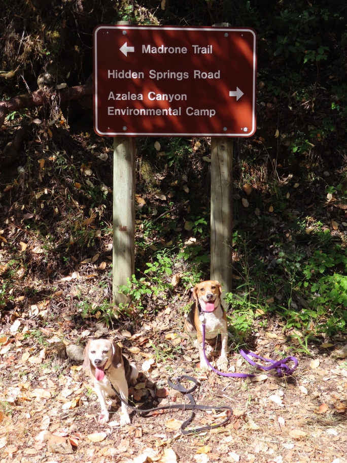

<--Previous Up Next-->

We had earller gone to the right on Hidden Springs Road and the Azalea Canyon Trail. We looped back around to this spot on the Crossover, Cathedral Rocks and Madrone Trails.
Halley Beagle Wallace Beagle